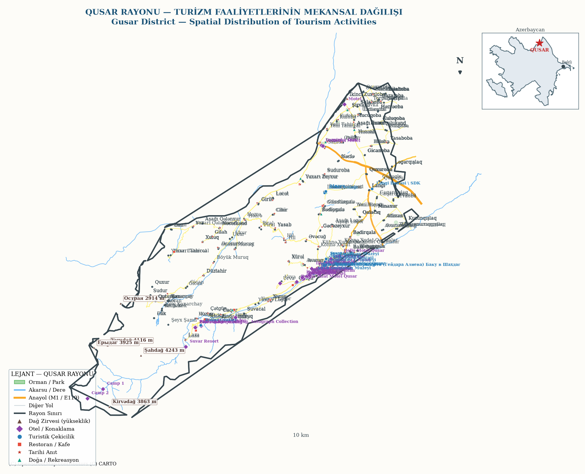

🧭 Qusar (Gusar) — Turizm Rehberi
Qusar rayonu, Azerbaycan'ın kuzeydoğusunda Büyük Kafkas Dağları'nın güney eteklerinde yer alır. Bu sayfa; rayonun mekânsal dağılış haritasını, nasıl gidileceğini, kimlerin geldiğini, nerede konakladığını ve ne kadar harcadığını bir araya getirir. Tez çalışması kapsamında üretilmiştir.

Qusar Rayonu — Turizm Faaliyetlerinin Mekansal Dağılışı | Sağ üst köşede Azerbaycan bağlam haritası: Qusar'ın ülke içindeki konumu (* işareti). Anayollar, akarsular, ormanlar, dağ zirveleri ve turizm noktaları birlikte gösterilmiştir.
🚌 Nasıl Gidilir?
Bakü'den (~183 km):
Otomobil: M1 / E119 karayolu (Bakü–Sumqayıt–Quba–Qusar) ile yaklaşık 2 saat 25 dakika (~183,6 km). OSRM rotası: 2 sa 25 dk.
Otobüs: Bakü Otogar'dan Qusar'a yarım saatte bir sefer; yolculuk 2,5–3 saat, ücret yaklaşık 6,49 AZN.
Hava: Gence (GYD) Havalimanı ~183 km (2 sa 25 dk). En yakın uluslararası kapı Bakü (GYD ~190 km).
Otobüs: Bakü Otogar'dan Qusar'a yarım saatte bir sefer; yolculuk 2,5–3 saat, ücret yaklaşık 6,49 AZN.
Hava: Gence (GYD) Havalimanı ~183 km (2 sa 25 dk). En yakın uluslararası kapı Bakü (GYD ~190 km).
Rusya'dan:
Karayolu: Dağıstan (RF) sınırına yakın konum — Qusar merkez, Rusya sınırına yaklaşık 60 km; M1 üzerinden Yalama/Samur sınır kapılarına bağlantılı.
Demiryolu: Bakü–Moskova hattı rayon sınırından geçer; Qusar'ın demiryolu ulaşımı Xaçmaz ve Bakü üzerinden sağlanır.
Demiryolu: Bakü–Moskova hattı rayon sınırından geçer; Qusar'ın demiryolu ulaşımı Xaçmaz ve Bakü üzerinden sağlanır.
Bakü→
M1 / E119→
Quba→
Qusar→
Şahdağ / Laza
Seyahat anlatısı: Bakü'den kuzeye M1/E119 anayolu üzerinden ilerlenir; Quba'dan sonra Qusar kavşağında kuzeybatıya dönülür. Büyük Kafkas Dağları'nın eteklerine doğru yükselen yol, Şahdağ Turizm Merkezi ve Laza köyüne (Hinaliq yolu) ulaşır. Rayon; Rusya (Dağıstan) sınırına yakınlığı nedeniyle hem iç hem dış turist akışında doğal bir geçiş noktasıdır.
🌍 Hangi Turistler Geliyor?
Toplam konaklayan (2024)92.383 kişi
Toplam geceleme (2024)191.556 gece
Yabancı geceleme (2024)107.034 gece
Yerli geceleme (2024)84.522 gece
Yabancı payı%55,9 ilk kez yerliyi aştı
Ortalama kalış süresi2,07 gün
Yabancı turist yapısı:
- Rusya (Dağıstan) — sınır komşuluğu ve tarihsel bağlar nedeniyle en büyük dış pazar; yaz döneminde dağ köyleri ve Şahdağ'a yoğun akış.
- Gürcistan, Türkiye, İran — karayolu erişimi ve bölgesel rotalar üzerinden gelen gruplar.
- Quba–Xaçmaz ekonomik bölgesi, ülke içi toplam gecelemenin %26,9'unu alır; bu payın önemli bölümü Qusar'daki Şahdağ Turizm Merkezi'ne aittir.
Mevsimsellik: Kış aylarında kayak turizmi (Şahdağ) talebi artırır; kış doluluk oranı %41,3 ile bölge ortalamasının üzerindedir. Yaz aylarında ise dağ turizmi ve kırsal rekreasyon öne çıkar.
🏨 Nerede Konaklıyorlar?
Turistik tesis sayısı21 tesis
Toplam oda1.020 oda
Toplam yatak2.454 yatak
Otel geliri (2024)44,1 mln AZN
Yoğunlaşma alanları:
- Qusar şehir merkezi — transit ve iş amaçlı konaklama; oteller, misafirhaneler.
- Şahdağ Turizm Merkezi çevresi — kayak otelleri, dağ evleri (chalet); kış sezonunun ana konaklama bölgesi.
- Dağ köyleri (Laza, Sudur, Urva vb.) — kırsal turizm, ev pansiyonları ve ekoturizm konaklaması.
- Online platformlarda (Booking vb.) rayon genelinde 96 kayıtlı konaklama işletmesi listelenir.
💸 Ne Kadar / Nerede Harcıyorlar?
Otel geliri (2024)44,1 mln AZN
Konaklayan başına otel geliri~477 AZN
İaşe (yeme-içme) ciro (Quba-Xaçmaz)13.791 bin AZN
İaşe işletmesi sayısı313 işletme
İaşe başına kişi ortalaması134,44 AZN
Harcama kalemleri:
- Konaklama — otel/dağ evi ücretleri (kış sezonunda kayak paketleriyle artar).
- Yeme-içme — rayon restoranları ve kırsal mutfak (turizm gelirinin en görünür ikinci kalemi).
- Ulaşım — Bakü–Qusar otobüs/taksi, Şahdağ'a teleferik ve transfer hizmetleri.
- Kayak & rekreasyon — kayak pisti, teleferik, ekipman kiralama, doğa turları.
- Alışveriş — yerel el sanatları, gıda ürünleri (bal, meyve, otlar).
Yorum: Yabancı gecelemenin yerli gecelemeyi ilk kez aşması (%55,9), Qusar'ın dış turizm ağırlıklı bir destinasyona dönüştüğünü gösterir. Gelir kompozisyonunda konaklama başı çekerken, iaşe ve rekreasyon harcamaları ikincil kalemlerdir.